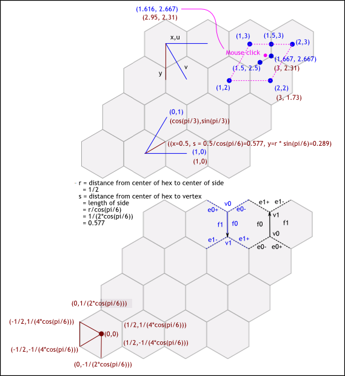

Coordinate Transformations Between Square and Hex Grids
In a square grid, cell coordinates are simple. The origin square is (0,0), the square immediately to the right of the origin cell
is (1,0), the square immediately above the origin cell is (0,1), and so on.
In a hex grid, we can do the same, but the axes must be tilted. The origin hex is (0,0), the hex immediately to the right
of the origin hex is (1,0), the hex immediately to the "northeast" of the origin hex is (0,1), and so on.
We want a mathematical transformation between the two coordinate systems, to be used for the following purposes:
* Hit-testing. We want to transform a mouse click (in magenta), in square-space coordinates (shown in maroon), to hex-space coordinates
(shown in blue).
* Rendering. We want to know where to draw a particular hex, given in hex-space coordinates, in square-space coordinates.
See this paper for basic change-of-basis matrices: http://www.math.ucsd.edu/~nslingle/bases.pdf
Figure 1: C:\Users\John\workspace\HexGrid2\src\com\how_hard_can_it_be\hexgrid\doc-files\hexgrid-coordinate-transform.png

Hex size: centers are 1 unit (yard, for GURPS) apart. Distance from center of hex to center of flat edge is 0.5.
Hex radius r, distance from hex center to vertex (same as length of side, s) is given below.
1 Change of basis matrix
| (%i5) | r: .5/cos(%pi/6); |
| (%i6) | %,numer; |

("%" refers to the previous result. ",numer" means we want it numerically.)
| (%i7) | cos(%pi/3); |
| (%i8) | sin(%pi/3); |
| (%i9) | %,numer; |
Matrix of column vectors (sadly, expressed in Maxima by rows). Each column is a base vector of hex-space expressed in
square-space coordinates.
| (%i10) | M: matrix([1,cos(%pi/3)],[0,sin(%pi/3)]); |
Point in hex-space (denoted w/subscript 'u' here):
| (%i11) | p1_u:[1,0]; |
Transformed by matrix M into square-space coordinates:
| (%i12) | M . p1_u; |
Horizontal travel is the same between the two coordinate systems: Moving 1 unit to the right in both systems results
in the same real motion.
Travel "vertically" in hex-space ("northeast" in the more tradition square-space) is a little more complex. Define a point:
| (%i13) | p2_u:[0,1]; |
Transform to square-space coordinates:
| (%i14) | p2_x: M . p2_u; |
Inverting the matrix should get us a matrix capable of performing the opposite transformation
(from square-space to hex-space):
| (%i15) | M_inv: invert(M); |
Demonstration that the two operations (transform from one space to the other and back again) are the identity
(which you would expect from the inverted matrix):
| (%i16) | M_inv . M; |
| (%i17) | M . M_inv; |
Transforming the "northeast" hex back to hex-space coordinates:
| (%i18) | M_inv . p2_x; |
Pick a point between two hexes (horizontally) and find out what its square-space coordinates are:
| (%i19) | M . [1.5,3]; |
| (%i20) | %,numer; |
| (%i21) | 3*.866; |
Pick two hexes adjacent in a "northwest-southeast" direction, and transform them to square-space coordinates:
| (%i22) |
u13: M . [1,3]; u22: M . [2,2]; |
| (%i24) | M . [1,3],numer; |
| (%i25) | M . [2,2],numer; |
Average the x- and y- coordinates (in square-space) to specify a point between u13 and u22:
| (%i26) | u_mid_13_22: [(5/2+3)/2,(3^(3/2)/2+sqrt(3))/2]; |
| (%i27) | %,numer; |
Transform from square-space to hex-space:
| (%i28) | M_inv . u_mid_13_22; |
Looks insane. Should be simpler, somehow. What do all those radicals evaluate to?
| (%i29) | %,numer; |
Ah, much better. And it makes sense.
| (%i30) | r * sin(%pi/6); |
| (%i31) | %,numer; |
square-space coordinates of vertex between 3 hexes:
| (%i32) | mid3_x: u22+[0,r]; |
(These column vectors appear in Maxima as matrices having one column and two rows, which fact will be used
in indexing mid3_x below.)
| (%i33) | %,numer; |
hex-space coordinates of same vertex:
| (%i34) | M_inv . mid3_x; |
| (%i35) | ratsimp(%); |
2 Hit-testing
Mouse click a hair to the left (in square-space) of the above vertex:
| (%i36) |
click_x:[mid3_x[1,1]-0.05, mid3_x[2,1]]; click_u: M_inv . click_x; |
| (%i38) | %,numer; |
So, if we pick the four corners of a quadrilateral containing the point, in hex-space, we get the following:
| (%i39) |
q1_u: [1,2]; q2_u: [2,2]; q3_u: [2,3]; q4_u: [1,3]; |
Transforming to square-space so we can use Pythagoras to pick the closest center. Picking the closest center should work
because the hexes are Voronoi regions (as are squares, but we don't use this algorithm in square-space because it's easier to
more directly find the containing square). The containing hex will always be one of the four hexes determined above.
| (%i43) |
q1_x: M . q1_u; q2_x: M . q2_u; q3_x: M . q3_u; q4_x: M . q4_u; |
So, the square of the distance from the click point to each of the 'q' points, in square-space:
| (%i47) |
r1: click_x - q1_x, numer; r2: click_x - q2_x, numer; r3: click_x - q3_x, numer; r4: click_x - q4_x, numer; |
Magnitude^2 of a column vector is defined below. We only need the square because we're just comparing similar numbers,
and we don't need to pay the cost of computing a square root.
| (%i51) | mag2covect(v) := v[1,1]^2 + v[2,1]^2; |
Hello, Pythagoras:
| (%i52) | mag2covect(matrix([3],[4])); |
| (%i53) |
mag2covect(r1); mag2covect(r2); mag2covect(r3); mag2covect(r4); |
Looks like q4 wins, as shown in the figure.